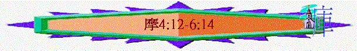

|
神吼叫 |
人回應 |
終結局 |
|
1-6 |
7 |
8-9 |
一.神吼叫(1-6)
1.神向列國吼叫(1-2)
2.神向以色列吼叫(3-6)
A.有因必有果的追討(3:1-4:11)
B.當預備見神的呼籲(4:12-5:15)
a.當預備的呼籲
「以色列啊，我必向你如此行；以色列啊，我既這樣行，你當預備迎見你的神。那創山、造風、將心意指示人、使晨光變為幽暗、腳踏在地之高處的，他的名是耶和華萬軍之神。」4:12-13
〜既然之前題及有因有果，神必如此追討，選民當要預備見神(要回轉才能坦然見神)
〜而預備所見的神是一位怎樣的神？
(1)創造者：祂才是創山造風的神，並不是偶像
(2)指示者：祂將心意指示人，並不是假先知、假神能指示屬天的心意
(3)審判者：祂使晨光變為幽暗，代表祂來黑暗的審判，前景不是光明的
(4)至高者：祂才是至高的神，並不是外邦，也不是以色列的首領
(5)元帥者：祂才是萬軍之神，萬軍之主，人當順服祂，懼怕祂
b.神攻擊的哀歌
「以色列家啊，要聽我為你們所作的哀歌：以色列民（原文作處女）跌倒，不得再起；躺在地上，無人攙扶。主耶和華如此說：以色列家的城發出一千兵的，只剩一百；發出一百的，只剩十個。」5:1-3
(1)被擊倒
(2)無幫助
(3)終慘敗
c.要預備的行動
(1)尋求神
(A)求別的終無有
「不要往伯特利尋求，不要進入吉甲，不要過到別是巴；因為吉甲必被擄掠，伯特利也必歸於無有。」5:5
〜吉甲、伯特利、別是巴是以色列過往敬拜偶像的地方，人尋求偶像，至終這些偶像也要被拆毀，所追求的也歸無有
(B)尋求神必存活
「耶和華向以色列家如此說：你們要尋求我，就必存活。」5:4
「要尋求耶和華，就必存活，免得他在約瑟家像火發出，在伯特利焚燒，無人撲滅。」5:6
「你們這使公平變為茵蔯、將公義丟棄於地的，要尋求那造昴星和參星，使死蔭變為晨光，使白日變為黑夜，命海水來澆在地上的（耶和華是他的名）；他使力強的忽遭滅亡，以致保障遭遇毀壞。」5:7-9
〜尋求神的國家與人民必得活(蹤然有外邦的敵人)，因為神才是
(a)真正的創造者
〜「昂星」----金牛宮七星，「參星」----獵戶星座，當時亞述人以這些星座為敬拜對像，可能以色列也受感染，但真正創造晨星的是神，人更應尋求創造晨星的真神
(b)真正的掌管者
〜神才是國家世界的掌管者，祂可使死蔭變為晨光，命海水澆在地上
(c)真正的能力者
〜人所仰望的不是人的能力，而是神自己，神有力拆毀一切，有能使力強的滅亡，人當仰望祂
(2)尋求善
(A)過往的惡行
(a)藐視良言
〜「城門口」是百姓訴訟的地點，他們對於審判官的責備及說話存藐視憎惡的心
(b)剝削貧民
「你們踐踏貧民，向他們勒索麥子；你們用鑿過的石頭建造房屋，卻不得住在其內；栽種美好的葡萄園，卻不得喝所出的酒。」5:11
(c)收受賄賂
「我知道你們的罪過何等多，你們的罪惡何等大。你們苦待義人，收受賄賂，在城門口屈枉窮乏人。」5:12
(B)將來的報應
(a)房屋----不得住在內
(b)葡萄園----不得喝所出來的酒
(C)現今的回轉
「你們要求善，不要求惡，就必存活。這樣，耶和華萬軍之神必照你們所說的與你們同在。要惡惡好善，在城門口秉公行義；或者耶和華萬軍之神向約瑟的餘民施恩。」5:14-15
(a)求善
〜「要尋求善」並秉公行善
(b)棄惡
C.不正確思想的喚醒(5:16-6:14)
a.神臨到的真實慘況
「主耶和華萬軍之神如此說：在一切寬闊處必有哀號的聲音；在各街市上必有人說：哀哉！哀哉！又必叫農夫來哭號，叫善唱哀歌的來舉哀。在各葡萄園必有哀號的聲音，因為我必從你中間經過。這是耶和華說的。」5:16-17
〜重點是在城內外，處處有哀聲
(1)一切寬闊處有哀聲
(2)在各街巿上有哀聲
(3)農夫善唱的發哀歌
(4)葡萄園必也有哀號
〜為何有哀號，因為神必從他們中間經過，對選民來說，神的臨到應是開心，光明的事情，但神要糾正他們錯誤的想法，神臨到他們是要刑罰他們
b.人安逸的錯誤思想
(1)以為將來的日子----是光明的
「想望耶和華日子來到的有禍了！你們為何想望耶和華的日子呢？那日黑暗沒有光明，景況好像人躲避獅子又遇見熊，或是進房屋以手靠牆，就被蛇咬。耶和華的日子不是黑暗沒有光明嗎？不是幽暗毫無光輝嗎？」5:18-20
〜他們是想望耶和華的日子臨到，但神日子臨到時，人好像躲避獅子一樣驚恐，日子是沒有光明，是幽暗，是有禍的
(2)以為現在的敬拜----蒙悅納的
(A)徒然的敬拜
(a)聚會----神不喜悅
「我厭惡你們的節期，也不喜悅你們的嚴肅會。」5:21
(b)奉獻----神不悅納
「你們雖然向我獻燔祭和素祭，我卻不悅納，也不顧你們用肥畜獻的平安祭；」5:22
(c)唱詩----神不願聽
「要使你們歌唱的聲音遠離我，因為我不聽你們彈琴的響聲。」5:23
(B)錯誤的敬拜
(a)有敬拜的內容，卻沒生命的表現
「惟願公平如大水滾滾，使公義如江河滔滔。」5:24
〜他們的生命沒有公平、公義，所以他們的敬拜，神也悅納
(b)有敬拜的行為，卻沒專一的純真
「以色列家啊，你們在曠野四十年，豈是將祭物和供物獻給我呢？你們抬著為自己所造之摩洛的帳幕和偶像的龕，並你們的神星。所以我要把你們擄到大馬色以外。」這是耶和華、名為萬軍之神說的。」5:25-27
〜v.26可譯「所以你們將要抬著你們的王「索古特」和你們的偶像「克完」，就是你們的星神，是你們為自己所造的」索古特是亞述的戰神，克完是亞述的土星神
〜「大馬色以外」是指亞述地，他們雖有敬拜表現，但卻對神不專一，除神以外，也拜甚它偶像，結果神要將他們擄至亞述去
(3)以為降禍的日子----甚遙遠的
(A)安逸的情景
(a)國家強大
「國為列國之首，人最著名，且為以色列家所歸向，在錫安和撒瑪利亞山安逸無慮的，有禍了！你們要過到甲尼察看，從那裡往大城哈馬去，又下到非利士人的迦特，看那些國比你們的國還強嗎？境界比你們的境界還寬嗎？」6:1-2
〜「甲尼」、「哈馬」是以色列北部亞蘭之城巿，「迦特」是南面非利巿之城，全句意思，從南至北，也找不到一個國家像以色列般強大
(b)人民無憂
「你們以為降禍的日子還遠，坐在位上盡行強暴（或作：行強暴使審判臨近）。你們躺臥在象牙床上，舒身在榻上，吃群中的羊羔，棚裡的牛犢；彈琴鼓瑟唱消閑的歌曲，為自己製造樂器，如同大衛所造的；以大碗喝酒，用上等的油抹身，卻不為約瑟的苦難擔憂。」6:3-6
〜百姓盡情吃喝玩樂
〜人民沒為苦難擔憂：「約瑟的苦難」約瑟曾被賣下埃及為奴，以色列人也將被擄至亞述為奴，但他們卻沒為此擄憂。
(B)真實的慘況
(a)安逸的被擄
「所以這些人必在被擄的人中首先被擄；舒身的人荒宴之樂必消滅了。」6:7
(b)剩下的被殺
「那時，若在一房之內剩下十個人，也都必死。」6:9
(c)大小屋被破
「看哪，耶和華出令，大房就被攻破，小屋就被打裂。」6:11
(C)得禍的原因
「馬豈能在崖石上奔跑？人豈能在那裡用牛耕種呢？你們卻使公平變為苦膽，使公義的果子變為茵蔯。」6:12
〜v12.所題到的比喻是表達出逆了及扭曲位置的問題，馬不能逆了位置在崖石上奔跑，「人豈能在那�堨峇�耕種」有譯「人豈能用牛在海�堹挹堜O」是不合理的
〜以色列人卻扭曲了公平、公義，所以神要審判他們。
(4)以為自己的力量----可成一切
「你們喜愛虛浮的事，自誇說：我們不是憑自己的力量取了角嗎？」6:13
(A)錯誤的自誇
〜角是力量的象徵，他們以為憑自己的力量，建立以色列國度。
(B)真正的慘敗
「耶和華、萬軍之神說：以色列家啊，我必興起一國攻擊你們；他們必欺壓你們，從哈馬口直到亞拉巴的河。」6:14